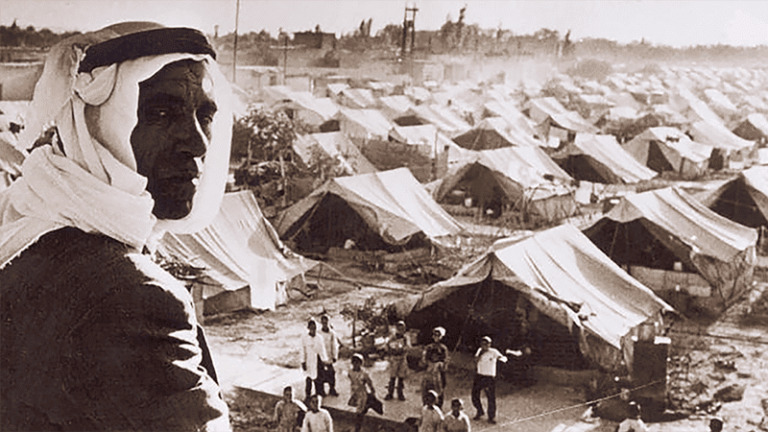

A curated, one-stop reference for anyone working on Nakba oral testimonies, Palestinian dialect speech recognition, Arabic NLP, or digital heritage preservation. Datasets, tools, papers, archives ,all in one place.

Major collections of recorded Palestinian testimonies ,audio, video, and transcribed interviews documenting the Nakba and its aftermath.
AUB's flagship collection ,1,000+ hours of video & audio testimonies from first-generation Palestinian refugees in Lebanon. Combines the Nakba Archive (558 hrs video), Al-Jana/ARCPA collections (550+ hrs), and AUB oral histories. Searchable in Arabic and English. Joint project of ARCPA, Nakba Archive, AUB's Issam Fares Institute, and AUB Libraries.
Browse ArchiveFounded in Lebanon in 2002. 650+ video interviews with first-generation refugees from 150+ villages. Some testimonies transcribed and translated into English. Core contributor to POHA.
VisitCommunity-driven platform with 700+ video oral-history interviews (3,500+ hours) organized by district and town. Launched 2003. The primary source for NakbaEcho's YouTube/PalRemembered subset (323 interviews).
Browse InterviewsIsraeli NGO collecting Nakba testimonies from internally displaced Palestinians and 1948 veterans. Features the iNakba/iReturn interactive map app of depopulated villages, plus the "Towards a Common Archive" project with 30+ filmed testimonies. Available in Arabic, English, and Hebrew.
Explore Testimonies343,485+ digitized archival items across 416 collections spanning 200+ years, including audio/video recordings, photographs, and documents. Based in Birzeit. Co-publisher of the Interactive Encyclopedia of the Palestine Question (PalQuest).
Explore Archive~500,000 assets: 430,000 negatives, 10,000 prints, 85,000 slides, 75 films, 730 videocassettes. Inscribed on UNESCO's Memory of the World register (2009). Partially digitized and online.
View CollectionInstitute for Palestine Studies + Palestinian Museum. Bilingual (Arabic/English), 800,000 words per language. Includes digitized "All That Remains" (418 destroyed villages), biographies, and primary documents. Launched June 2022.
Browse EncyclopediaPublicly available corpora for Nakba research, Palestinian Arabic NLP, and Levantine speech recognition.
NakbaEcho is the field's flagship corpus bridging the speech-text gap ,708 automatically-transcribed interviews (2,180 hrs, 12.85M tokens) with NER, emotion, and thematic annotations. View on GitHub
708 interviews, ~2,180 hours, 12.85M tokens, 1,051,160 segments, 747,632 named entities, 239 villages. Sources: POHA (349), YouTube/PalRemembered (323), Zochrot (36). Transcribed with Gemini 2.5 Pro preserving dialect (no MSA normalization). 7.00% micro-averaged WER. Annotations: emotion, NER (CAMeL-Lab BERT), thematic flags, speaker gender. To appear at LREC 2026.
GitHub RepoLexical dataset from the poetry collection Asifa 'Ala al-Iz'aj by Istiqlal Eid. 10 thematic domains. Used with AraBERT/MARBERT models. Presented at NakbaNLP 2025.
4,032 sentences annotated with 2,289 PERSON, 5,875 LOCATION, 1,299 ORGANIZATION tags. Turkish-language Nakba narrative NER.
Bilingual social-media dataset for collective-trauma analysis. Zaghouani et al., accepted at NakbaNLP 2026.
Palestinian dialect corpus, 56K tokens, annotated with 16 morphological features per token. The foundational Palestinian Arabic NLP corpus, from Birzeit SinaLab. Extended with Baladi (Lebanese, 10K tokens) and Nabra (Syrian, 60K tokens) to form a Levantine family.
Access Portal550K tokens (MSA + dialect), 21 entity types with nested annotations. Extended by WojoodFine (51 subtypes), WojoodGaza (60K tokens from Israeli war on Gaza), WojoodRelations (40 relation types), and WojoodHadath (event-argument). From Birzeit SinaLab.
SinaLab ResourcesMulti-domain, multi-dialect NER corpus: 777K tokens, 16 dialects × 10 domains. Companion to Wojood for broader Arabic NER. From Birzeit SinaLab.
31,404 intent-detection queries in MSA + Palestinian (and other) dialects, 77 banking intents. Useful for Palestinian dialect intent classification.
GitHub~48 hours covering 8 Arabic dialects including Palestinian (~6 hrs, 22 episodes). Annotated with transcription, gender, dialect, code-switching. Palestinian subset is heavily male-skewed (92.31%). Validation+test splits; audio via YouTube URLs. Co-authored by Birzeit researchers (EMNLP 2024).
Hugging Face1,000 hours from 700+ YouTube channels, 20+ dialects including Levantine. Widely used as a base for fine-tuning Arabic ASR models.
Hugging FaceQASR: 2,000 hours from Al Jazeera with segmentation, punctuation, and speaker info. MGB-2: 1,200 hours of Arabic broadcast speech (~78% MSA). MGB-3: Egyptian dialect. MGB-5: Moroccan dialect. Standard benchmarks for Arabic ASR.
Papers from the NakbaNLP workshops and core Palestinian Arabic NLP research.
Shared Tasks: NakbaVirality · NakbaArchiveClassifier (image classification) · StanceNakba · NakbaFakeNewsDetection · AR-MS (Arabic manuscript understanding)
Speech recognition tools and their performance on Palestinian Arabic ,the hardest practical gap in this field.
Palestinian Arabic ASR remains an unsolved problem. The best published WER on the Casablanca Palestinian test set is ~48.6% (Whisper-large-v2 with preprocessing). Any project transcribing testimonies must budget for heavy human correction or domain-specific fine-tuning.
| Model | Type | Palestinian WER | Notes | Link |
|---|---|---|---|---|
| Whisper-large-v2 | Open (OpenAI) | ~48.6% | Best zero-shot on Palestinian (with preprocessing). Degrades sharply on unseen dialects. | GitHub |
| WhisperLevantineArabic | Open (Apache-2.0) | ~33% | Whisper-large-v3 fine-tuned on ~1,200 hrs Levantine. Model card says 33% WER (README claims 10% ,use model card figure). | HuggingFace |
| whisper-small-dialect_levantine | Open (Apache-2.0) | Not reported | Whisper-small fine-tuned on Levantine subset (<20 hrs) of MASC. | HuggingFace |
| ARBML / klaam | Open | — | Open-source Arabic ASR; covers a Levantine dialect class. MGB-2/MGB-3 based. | GitHub |
| Munsit (CNTXT AI) | Commercial/API | ~24%* | Claims best Arabic ASR. 26.68 avg WER across 6 benchmarks. *Self-reported; no independent Palestinian eval. | Paper |
Leaderboard: Open Universal Arabic ASR Leaderboard (arXiv 2412.13788) ,benchmarks Arabic ASR models using Casablanca and MASC test sets.
Open-source tools for morphological analysis, NER, dialect identification, and Arabic text processing.
Birzeit SinaLab's Python toolkit: morphology tagging, NER, word sense disambiguation, relation extraction, semantic relatedness, synonyms, diacritic-based matching. The most complete open stack for Palestinian Arabic NLP.
DocumentationNYU Abu Dhabi's comprehensive Arabic NLP suite: preprocessing, morphological analysis, dialect identification (25 cities + MSA via MADAR), NER, sentiment analysis. CAMeL collaborated with Birzeit on annotating 50K words of Palestinian Arabic. Used in NakbaEcho for NER.
GitHubLemmatizer, POS tagger, and root extractor for Arabic including Palestinian dialect. Part of the SinaLab ecosystem.
Try OnlineCorpus and system for Arabic dialect identification across 25 Arab cities. Underpins CAMeL Tools' dialect ID and the ADIDA online identifier.
Project PagePre-trained Arabic transformer models widely used in NakbaNLP papers for sentiment analysis, topic classification, and NER. AraBERT is trained on MSA; MARBERT is dialect-aware (Twitter-trained).
Online demo for testing Wojood NER on Arabic text ,supports MSA and dialect with 21 entity types and nested annotations.
Try OnlineInteractive storytelling platforms, geographic visualizations, and documentary projects preserving Nakba narratives.
200+ 1940s British Mandate survey map sheets stitched with present-day data, 1945 Village Statistics, aerial photography, and oral histories. Downloadable, Arabic interface, 3D viewer. By Visualizing Palestine + Columbia Studio-X Amman.
Explore MapsNavigate POHA testimonies geographically and chronologically by landmark. By Visualizing Palestine + AUB.
View MapData-driven infographics and digital storytelling ,including "We Had Dreams," "Remember Their Names," "Gaza's Original Villages," and interactive map projects.
VisitSpatial/architectural investigations including Return to al-Ma'in, Executions and Mass Graves in Tantura, The Massacre at al-Dawayima, and Ground Truth (al-Araqib). Partnered with Al-Haq's FAI Unit.
InvestigationsInteractive mobile app mapping depopulated Palestinian villages with testimonies, photographs, and historical data. Available in Arabic, English, and Hebrew.
Al-Nakba (Rawan Damen, Al Jazeera, 2008, four parts) · The Great Book Robbery (Benny Brunner, 2012)
Academic labs, archives, and NGOs at the center of Nakba research and Palestinian Arabic NLP.
The hub for Palestinian Arabic NLP. Produces Curras, Wojood, SinaTools, ALMA, ArBanking77, Konooz, Qabas, and the Arabic Ontology. Organizer of the NakbaNLP workshop series. Led by Prof. Mustafa Jarrar.
SinaLabOldest institute devoted to Palestine documentation (Beirut, 1963). Co-publisher of PalQuest. Publishes the Journal of Palestine Studies.
Birzeit-based. Runs the PMDA (343,485+ items) and PalQuest encyclopedia. Major hub for Palestinian digital heritage.
Founded by Salman Abu Sitta. Produces the Atlas of Palestine and the register of depopulated localities ,the geographic backbone of many Nakba projects.
Produces CAMeL Tools, MADAR, CAMeLBERT, and related Arabic NLP infrastructure. Key collaborator with Birzeit on Palestinian dialect annotation.
BADIL Resource Center ,Palestinian refugee rights, al-Majdal magazine. · UNRWA ,Custodian of the UNESCO-listed archive. · Al-Haq ,Human rights, FAI Unit. · 7amleh ,Arab Center for the Advancement of Social Media.